library(sf)
library(dplyr)
library(ggplot2)
library(tmap)
library(e1071)2 Eksploracyjna analiza danych
Czego się nauczysz
Po tym rozdziale potrafisz wykonać w R:
- obliczyć i opisać podstawowe statystyki opisowe zmiennej oraz liczebność kategorii,
- przedstawić rozkład zmiennej na histogramie i wykresie gęstości, obliczyć skośność i kurtozę oraz wskazać wartości globalnie odstające,
- zbadać zależność między dwiema zmiennymi ilościowymi (wykres rozrzutu, test korelacji),
- zbadać zależność wielu zmiennych jednocześnie (macierz korelacji, macierz wykresów rozrzutu),
- zbadać zróżnicowanie zmiennej ilościowej w grupach (wykres pudełkowy, analiza wariancji, porównania wielokrotne),
- wykonać mapę lokalizacyjną oraz mapę rozkładu przestrzennego zmiennej.
Rozumiesz i umiesz zinterpretować:
- różnicę między istotnością statystyczną a siłą zależności,
- skośność i kurtozę jako liczbowy opis rozkładu,
- wykres pudełkowy czytany razem z liczebnością grup,
- objawy wartości odstających lokalnie oraz typ próbkowania widoczny na mapie,
- granice wnioskowania z danych obszarowych: korelacja nie jest przyczynowością, a zależność między obszarami nie przenosi się na osoby.
Teoria: Najważniejsze informacje. Przygotowanie danych: Rozdział 1. Funkcje: Załącznik B.
2.1 Wprowadzenie
Rozdział pokazuje, jak wykonać eksploracyjną analizę danych w R. Teorię — cele eksploracji, podział na analizę nieprzestrzenną i przestrzenną, opis poszczególnych metod — zawiera rozdział teoretyczny części; tutaj zajmujemy się wyłącznie jego zastosowaniem.
Oba przykłady startują z danych już przygotowanych. Przygotowanie danych przestrzennych — złączenia, ujednolicenie układów współrzędnych, selekcja przestrzenna, zliczanie punktów w poligonach — jest przedmiotem Rozdział 1.
- Przykład 1 dotyczy danych obszarowych i jest wzorcem dla projektu 1 (Rozdział 13).
- Przykład 2 dotyczy danych punktowych i jest punktem wyjścia dla części geostatystycznej (Rozdział 9).
2.2 Eksploracyjna analiza danych w R
| Czynność | Funkcja |
|---|---|
| podstawowe statystyki opisowe | summary(), sd() |
| liczebność kategorii | table() |
| skośność i kurtoza | e1071::skewness(), e1071::kurtosis() |
| histogram, wykres gęstości | ggplot2::geom_histogram(), geom_density() |
| wykres pudełkowy | ggplot2::geom_boxplot() |
| wykres rozrzutu | ggplot2::geom_point() |
| współczynnik korelacji i test korelacji | cor(), cor.test(method = "spearman") |
| macierz wykresów rozrzutu | PerformanceAnalytics::chart.Correlation() |
| analiza wariancji i porównania wielokrotne | aov(), TukeyHSD() |
| mapa lokalizacyjna z siatką współrzędnych | tmap::tm_grid(), tm_graticules() |
| mapa rozkładu przestrzennego zmiennej | tmap::tm_symbols(), tm_polygons() |
Pełne zestawienie funkcji — Załącznik B.
2.3 Przykład 1: Przestępczość w hrabstwie Cook
Dane i cel analizy
Cel. Znalezienie czynników społeczno-ekonomicznych powiązanych z poziomem przestępczości. Czy istnieje zależność między współczynnikiem kradzieży samochodów a zmiennymi społeczno-ekonomicznymi?
Dane. Plik data/cook_przygotowane.gpkg — obszary spisowe hrabstwa Cook z przypisanymi danymi społeczno-ekonomicznymi (American Community Survey 2016–2020), liczbą kradzieży samochodów w 2020 roku (NB_CRIMES) oraz współczynnikiem na 1000 mieszkańców (CRIME_RATE). Sposób przygotowania tego pliku z trzech źródeł pokazuje Rozdział 1.
cook = read_sf("data/cook_przygotowane.gpkg", layer = "cook")
nrow(cook)[1] 788Część analiz statystycznych wykonuje się na tabeli bez kolumny geometrii.
cook_attr = st_drop_geometry(cook)Krok 1: podsumowanie numeryczne
summary(cook_attr$CRIME_RATE) Min. 1st Qu. Median Mean 3rd Qu. Max.
0.1563 1.5652 2.8933 4.3606 6.0958 31.1284 sd(cook_attr$CRIME_RATE)[1] 4.06271table(cook_attr$INCOME_CAT, useNA = "ifany")
high low medium <NA>
152 282 349 5 table(cook_attr$HOME_VALUES_CAT, useNA = "ifany")
high low medium <NA>
208 199 365 16 table(cook_attr$BUILT_YEAR_CAT, useNA = "ifany")
medium new old
314 16 458 Krok 2: rozkład zmiennej
ggplot(cook_attr, aes(x = CRIME_RATE)) +
geom_histogram() +
labs(x = "Kradzieże na 1000 mieszkańców", y = "Liczba obszarów spisowych") +
theme_bw()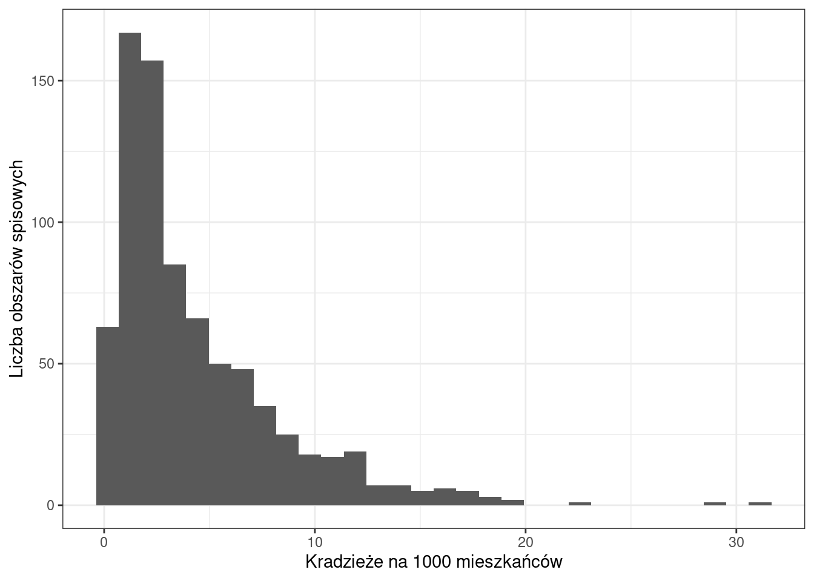
skewness(cook_attr$CRIME_RATE)[1] 1.93658Krok 3: zależność od zmiennych społeczno-ekonomicznych
Obliczamy współczynniki korelacji między przestępczością a wszystkimi zmiennymi ilościowymi. Zmienne wskazujemy nazwami, a nie numerami kolumn — numery przestają być poprawne po każdej zmianie w zbiorze danych.
zmienne = c("WHITE", "BLACK", "ASIAN", "HISPANIC", "OTHER", "FOREIGN_BORN",
"UNEMPL", "PUBLIC_ASSIST", "VACANT", "OCCUPIED", "OWNER", "RENTER",
"MEDIAN_INCOME", "MEDIAN_BUILT_YEAR", "MEDIAN_HOME_VALUE",
"SEX_RATIO", "EDU_HIGH")
korelacje = sapply(cook_attr[zmienne], function(x) {
cor(cook_attr$CRIME_RATE, x, method = "spearman", use = "complete.obs")
})
round(sort(korelacje), 2) WHITE OCCUPIED FOREIGN_BORN MEDIAN_INCOME
-0.58 -0.54 -0.54 -0.50
ASIAN HISPANIC MEDIAN_HOME_VALUE EDU_HIGH
-0.49 -0.42 -0.41 -0.37
OWNER SEX_RATIO MEDIAN_BUILT_YEAR OTHER
-0.37 -0.27 0.00 0.15
RENTER UNEMPL VACANT PUBLIC_ASSIST
0.37 0.49 0.54 0.56
BLACK
0.64 Do dalszej analizy wybieramy zmienne o współczynniku korelacji przekraczającym 0,5 w wartości bezwzględnej.
wybrane = names(korelacje)[abs(korelacje) > 0.5]
round(korelacje[wybrane], 2) WHITE BLACK FOREIGN_BORN PUBLIC_ASSIST VACANT
-0.58 0.64 -0.54 0.56 0.54
OCCUPIED MEDIAN_INCOME
-0.54 -0.50 Macierz wykresów rozrzutu przedstawia jednocześnie rozkłady wybranych zmiennych, wykresy rozrzutu dla wszystkich par oraz wartości współczynników korelacji.
PerformanceAnalytics::chart.Correlation(cook_attr[, c("CRIME_RATE", wybrane)],
histogram = TRUE, pch = 19,
method = "spearman")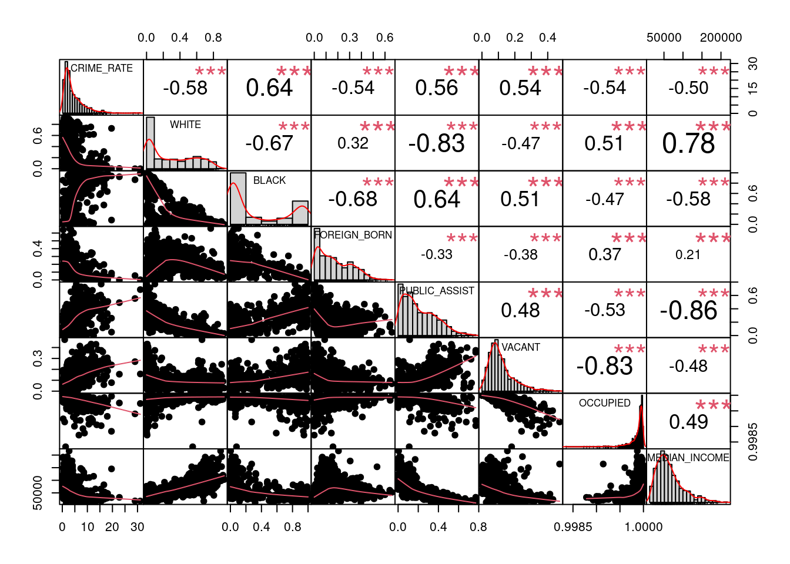
Dlaczego
PerformanceAnalytics::, a nie library(PerformanceAnalytics)
Pakiet PerformanceAnalytics zawiera własne funkcje skewness() i kurtosis(), o takich samych nazwach jak funkcje z pakietu e1071. Po wywołaniu library(PerformanceAnalytics) zasłaniają one funkcje z e1071 — a liczą według innego estymatora, więc dają inne wyniki (dla danych z Przykładu 2: skośność 0,416 zamiast 0,413, kurtoza −0,562 zamiast −0,581).
R informuje o tym komunikatem The following objects are masked from 'package:e1071', który łatwo przeoczyć. Dlatego funkcję potrzebną tylko raz wywołujemy z przedrostkiem nazwy pakietu (pakiet::funkcja()), bez library() — nic wtedy nie zostaje zasłonięte.
Krok 4: zmienność przestępczości w klasach
Klasy dochodu i wartości domów wyznaczono kwartylami odpowiedniej zmiennej: low — wartości poniżej pierwszego kwartyla, medium — między pierwszym a trzecim kwartylem, high — powyżej trzeciego kwartyla. Klasy wieku zabudowy: old — zabudowa powstała przed 1950 rokiem, medium — między 1950 a 2000, new — po 2000 roku.
cook_attr |>
filter(!is.na(INCOME_CAT)) |>
mutate(INCOME_CAT = factor(INCOME_CAT, levels = c("low", "medium", "high"))) |>
ggplot(aes(x = INCOME_CAT, y = CRIME_RATE)) +
geom_boxplot() +
labs(x = "Poziom dochodów gospodarstw domowych",
y = "Kradzieże na 1000 mieszkańców") +
theme_bw()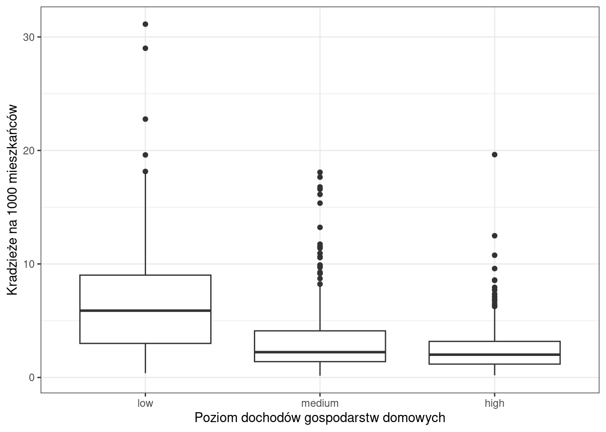
cook_attr |>
filter(!is.na(HOME_VALUES_CAT)) |>
mutate(HOME_VALUES_CAT = factor(HOME_VALUES_CAT, levels = c("low", "medium", "high"))) |>
ggplot(aes(x = HOME_VALUES_CAT, y = CRIME_RATE)) +
geom_boxplot() +
labs(x = "Wartość domów", y = "Kradzieże na 1000 mieszkańców") +
theme_bw()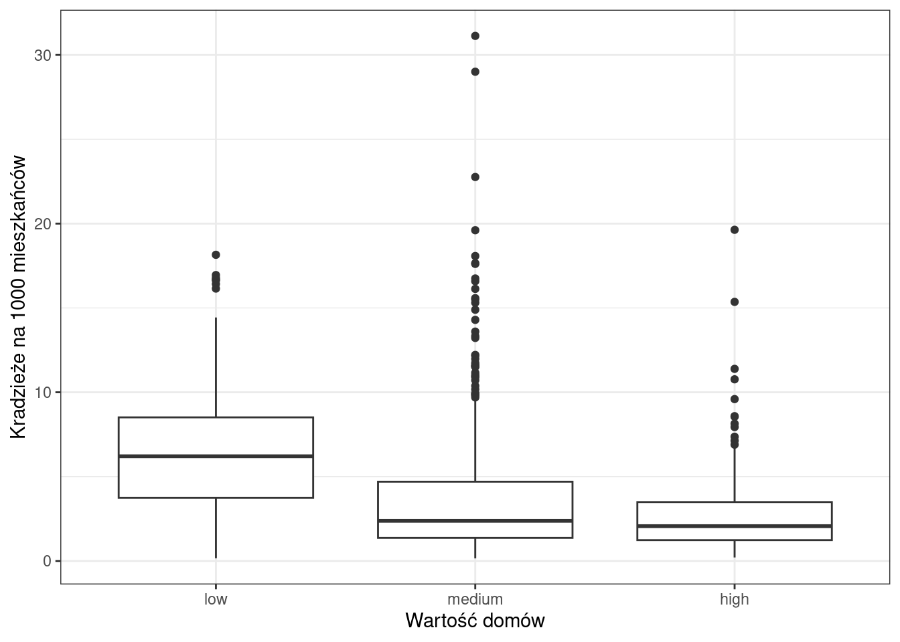
cook_attr |>
mutate(BUILT_YEAR_CAT = factor(BUILT_YEAR_CAT, levels = c("old", "medium", "new"))) |>
ggplot(aes(x = BUILT_YEAR_CAT, y = CRIME_RATE)) +
geom_boxplot() +
labs(x = "Wiek zabudowy", y = "Kradzieże na 1000 mieszkańców") +
theme_bw()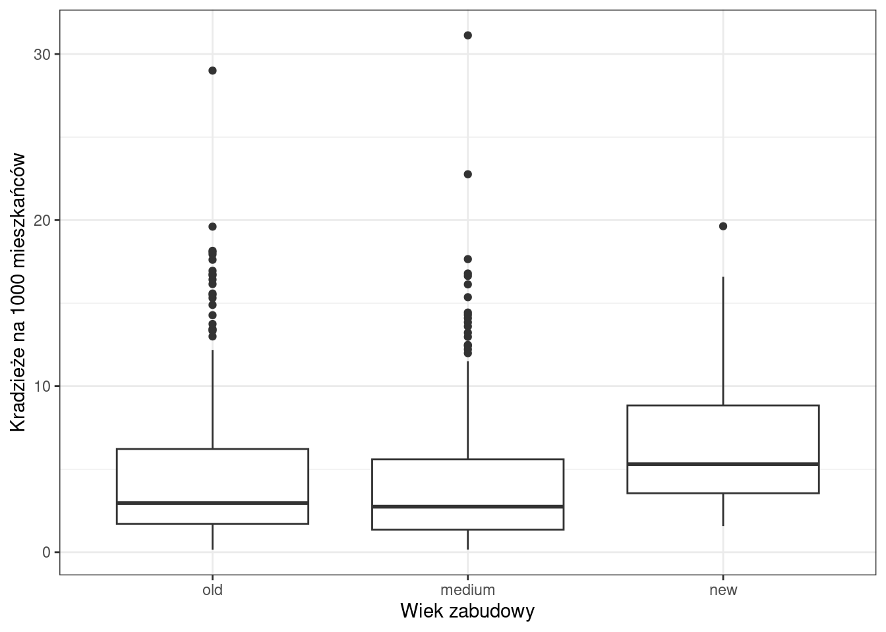
Mediany w klasach, do odczytania razem z liczebnościami z kroku 1:
cook_attr |>
filter(!is.na(INCOME_CAT)) |>
group_by(INCOME_CAT) |>
summarise(n = n(), mediana = round(median(CRIME_RATE), 2))# A tibble: 3 × 3
INCOME_CAT n mediana
<chr> <int> <dbl>
1 high 152 2.01
2 low 282 5.89
3 medium 349 2.23cook_attr |>
group_by(BUILT_YEAR_CAT) |>
summarise(n = n(), mediana = round(median(CRIME_RATE), 2))# A tibble: 3 × 3
BUILT_YEAR_CAT n mediana
<chr> <int> <dbl>
1 medium 314 2.74
2 new 16 5.3
3 old 458 2.96Krok 5: eksploracyjna analiza przestrzenna
Eksploracja przestrzenna polega tu na wizualizacji przestępczości oraz zmiennych społeczno-ekonomicznych, aby ocenić, czy obszary o wysokich i niskich wartościach pokrywają się przestrzennie.
tm_shape(cook) +
tm_polygons(fill = "CRIME_RATE",
fill.scale = tm_scale_intervals(style = "jenks", n = 4,
values = "brewer.yl_or_rd"),
fill.legend = tm_legend(title = "Kradzieże / 1000 mieszk."))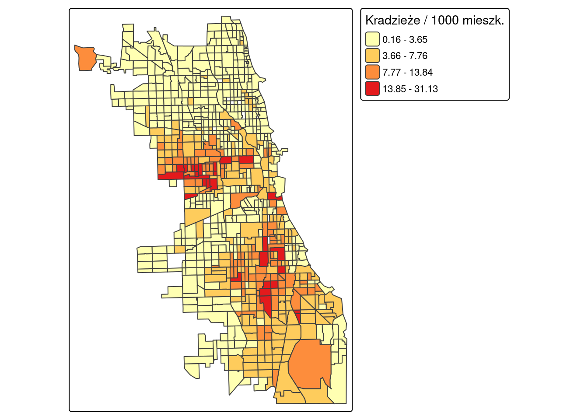
paleta = tm_scale_intervals(values = "brewer.yl_or_rd")
tmap_arrange(
tm_shape(cook) +
tm_polygons(fill = "BLACK", fill.scale = paleta,
fill.legend = tm_legend(title = "BLACK")),
tm_shape(cook) +
tm_polygons(fill = "WHITE", fill.scale = paleta,
fill.legend = tm_legend(title = "WHITE")),
tm_shape(cook) +
tm_polygons(fill = "VACANT", fill.scale = paleta,
fill.legend = tm_legend(title = "VACANT")),
tm_shape(cook) +
tm_polygons(fill = "PUBLIC_ASSIST", fill.scale = paleta,
fill.legend = tm_legend(title = "PUBLIC_ASSIST")),
ncol = 2)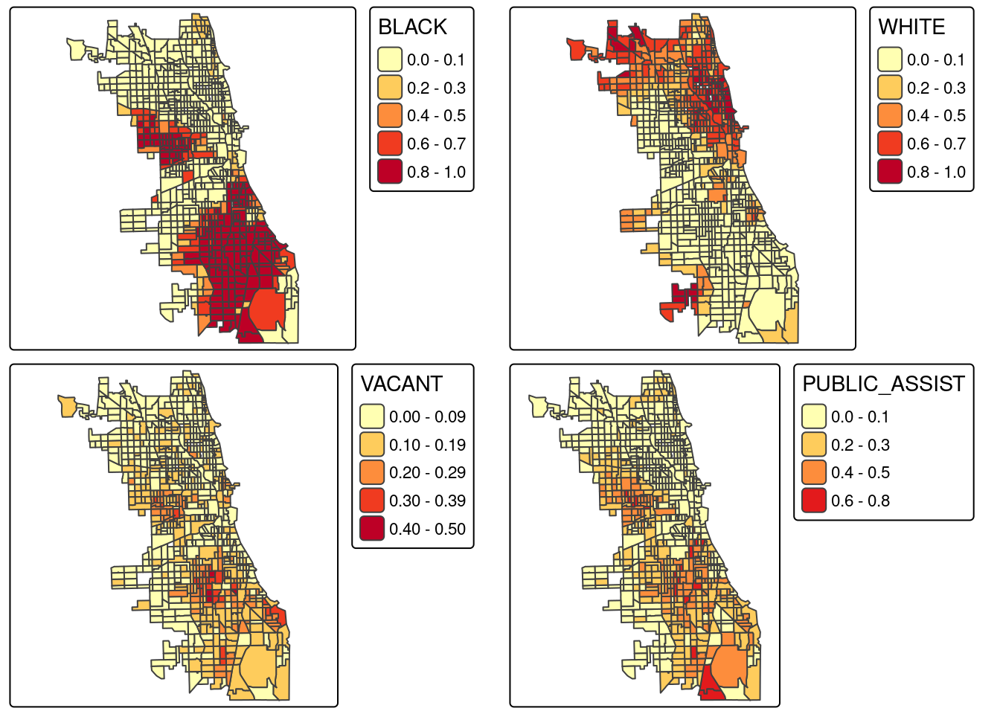
Zmienne jakościowe wymagają skali kategorycznej i palety przypisanej do klas.
paleta_klas = c(low = "#FFF68F", medium = "#EEB422", high = "#FF4040")
tmap_arrange(
tm_shape(cook) +
tm_polygons(fill = "INCOME_CAT",
fill.scale = tm_scale_categorical(values = paleta_klas),
fill.legend = tm_legend(title = "Dochód")),
tm_shape(cook) +
tm_polygons(fill = "HOME_VALUES_CAT",
fill.scale = tm_scale_categorical(values = paleta_klas),
fill.legend = tm_legend(title = "Wartość domów")),
ncol = 2)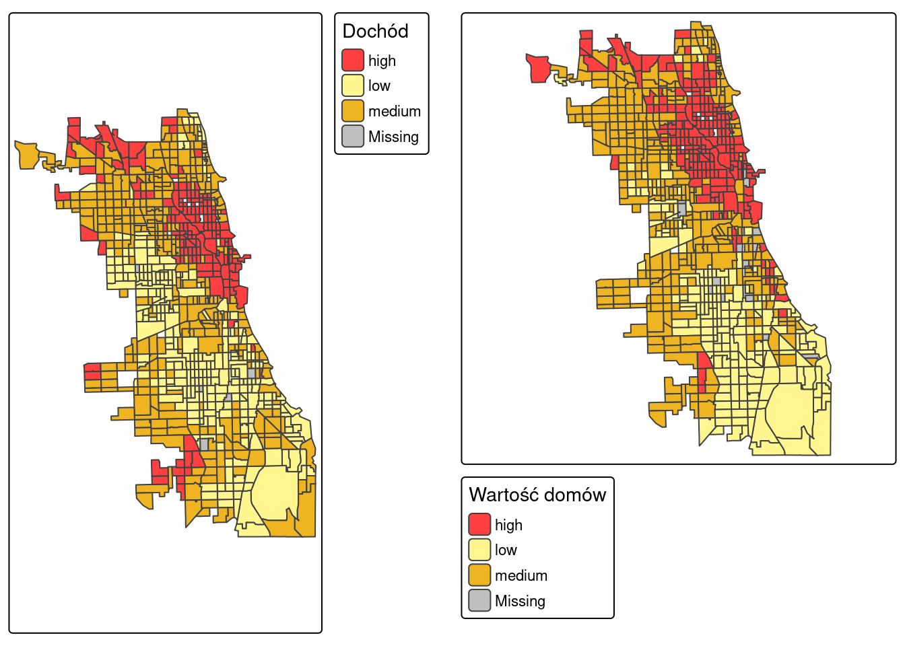
Interpretacja wyniku
Rozkład zmiennej. Współczynnik kradzieży samochodów w 788 obszarach spisowych waha się od 0.16 do 31.13 na 1000 mieszkańców, przy medianie 2.89 i średniej 4.36. Średnia jest ponad półtora raza wyższa od mediany, a skośność wynosi 1.94 — rozkład jest silnie prawoskośny. Histogram to potwierdza: w większości obszarów współczynnik jest niski, a pojedyncze obszary osiągają wartości kilkukrotnie wyższe od typowych. Dla takiego rozkładu medianą opisujemy przeciętny poziom zjawiska, nie średnią, a do pomiaru korelacji stosujemy współczynnik Spearmana, nie Pearsona.
Zależność od zmiennych społeczno-ekonomicznych. Siedem zmiennych ma współczynnik korelacji przekraczający 0,5 w wartości bezwzględnej. Dodatnio skorelowane są: udział ludności czarnej (BLACK, rho = 0,64), udział gospodarstw korzystających z pomocy społecznej (PUBLIC_ASSIST, 0,56) oraz udział budynków niezamieszkałych (VACANT, 0,54). Ujemnie: udział ludności białej (WHITE, −0,58), udział budynków zamieszkałych (OCCUPIED, −0,54), udział osób urodzonych za granicą (FOREIGN_BORN, −0,54) oraz mediana dochodów (MEDIAN_INCOME, −0,50).
Wartości z przedziału od 0,50 do 0,64 to zależności umiarkowane — wyraźne, ale daleko im do silnych. Opis jednym zdaniem: wyższy współczynnik kradzieży samochodów współwystępuje z niższymi dochodami, większym udziałem zabudowy niezamieszkałej i większym udziałem gospodarstw korzystających z pomocy społecznej.
Dwie pary zmiennych na tej liście nie są niezależnymi obserwacjami: WHITE i BLACK oraz VACANT i OCCUPIED dopełniają się nawzajem, dlatego ich współczynniki mają przeciwne znaki i podobną wartość bezwzględną. To jedna informacja podana dwa razy, nie dwie.
Zmienność w klasach. Mediana współczynnika wynosi 5,89 w klasie niskich dochodów wobec 2,23 w klasie średnich i 2,01 w klasie wysokich. Dla wartości domów układ jest podobny: 6,20 — 2,38 — 2,06. W obu przypadkach różnica dotyczy przede wszystkim klasy najniższej, a nie przebiega równomiernie przez wszystkie trzy klasy.
Dla wieku zabudowy wynik wygląda na pierwszy rzut oka podobnie wyraźnie — mediana 5,30 dla zabudowy nowej wobec 2,96 dla starej i 2,74 dla średniej — ale klasa new liczy tylko 16 obszarów z 788. Wniosek jest więc słaby: pojedyncze obszary decydują o położeniu całego pudełka. To typowa pułapka wykresu pudełkowego, który przedstawia każdą grupę w tej samej skali graficznej niezależnie od liczebności. Dlatego czyta się go razem z wynikiem table().
Eksploracja przestrzenna. Obszary o wysokim współczynniku kradzieży koncentrują się w południowej i środkowej części analizowanego obszaru. Tam też przeważają klasy niskich dochodów i niskiej wartości domów, wyższy jest udział zabudowy niezamieszkałej i udział gospodarstw korzystających z pomocy społecznej. Mapy zmiennych rasowo-etnicznych pokazują wyraźny podział przestrzenny, pokrywający się z podziałem pozostałych zmiennych.
Zakres wniosków z eksploracji
Eksploracja wskazała, gdzie współczynnik kradzieży jest wysoki i z czym współwystępuje. Wniosek o przyczynie przestępczości wymagałby odrębnego postępowania, z trzech powodów:
- Korelacja nie jest przyczynowością. Obie zmienne mogą być skutkiem trzeciego czynnika, a kierunek zależności może być odwrotny od zakładanego.
- Błąd ekologiczny (ang. ecological fallacy). Zależność zaobserwowana na poziomie obszarów spisowych nie przenosi się na poziom osób ani gospodarstw domowych. Z tego, że obszary o niższej medianie dochodów mają wyższy współczynnik kradzieży, nie wynika nic o osobach o niższych dochodach.
- Problem zmiennych jednostek odniesienia (ang. modifiable areal unit problem, MAUP). Wyniki zależą od podziału obszaru na jednostki — przy innym podziale wartości współczynników korelacji mogą być inne. Pojęcie to omawia Rozdział 7.
Eksploracja wskazuje, gdzie szukać. Pytanie „dlaczego” należy do modelowania, które uwzględnia te trzy zastrzeżenia.
2.4 Przykład 2: Rozkład temperatury powietrza
Dane i cel analizy
Cel. Uzyskanie informacji o przestrzennym rozkładzie wartości temperatury powietrza. Te same dane posłużą następnie do oszacowania wartości dla całego obszaru jedną z geostatystycznych metod estymacji (Rozdział 10) — eksploracja ma odpowiedzieć na pytanie, czy dane się do tego nadają.
Dane.
data/punkty.csv— lokalizacje pomiarów temperatury powietrza wraz ze zmiennymi dodatkowymi: wskaźnikiem wegetacji (ndvi), wysokością n.p.m. (srtm) oraz klasą pokrycia terenu (clc),data/granica.gpkg— granica obszaru analizy.
granica = read_sf("data/granica.gpkg")
punkty = read.csv("data/punkty.csv") |>
filter(!is.na(temp)) |>
st_as_sf(coords = c("x", "y"), crs = "EPSG:2180")
nrow(punkty)[1] 247Z 248 wierszy pliku pozostało 247 — jedna obserwacja nie ma zmierzonej temperatury i została usunięta.
Krok 1: podsumowanie numeryczne
summary(punkty$temp) Min. 1st Qu. Median Mean 3rd Qu. Max.
7.883 12.003 14.941 15.273 17.630 24.945 sd(punkty$temp)[1] 3.973076Krok 2: rozkład zmiennej
ggplot(punkty, aes(temp)) +
geom_histogram() +
labs(x = "Temperatura [°C]", y = "Liczba obserwacji") +
theme_bw()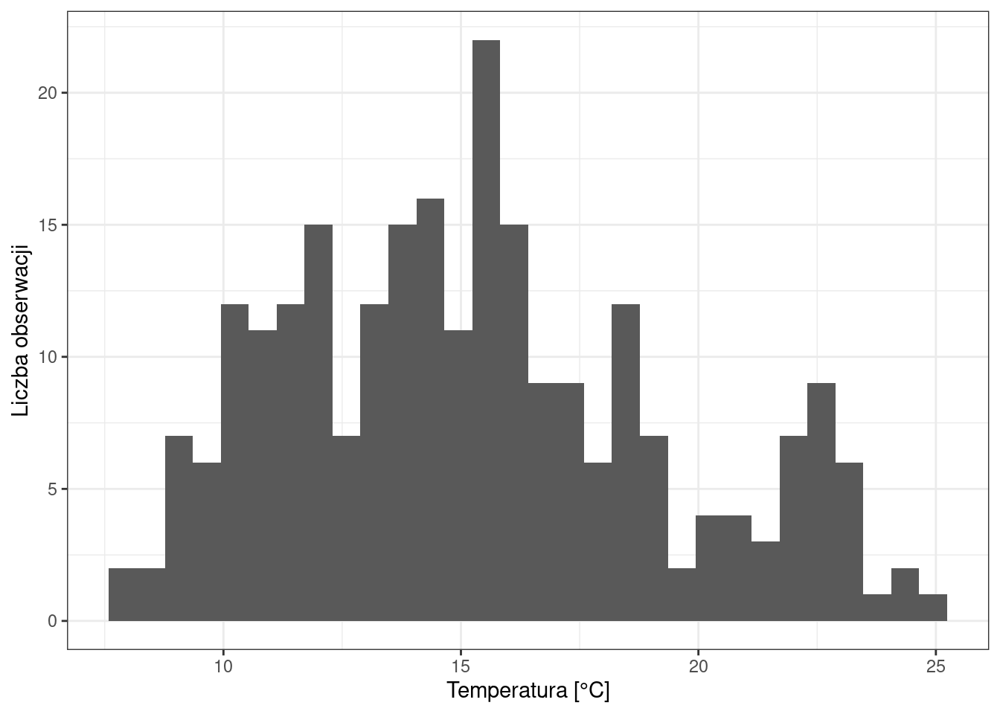
ggplot(punkty, aes(temp)) +
geom_density() +
labs(x = "Temperatura [°C]", y = "Gęstość") +
theme_bw()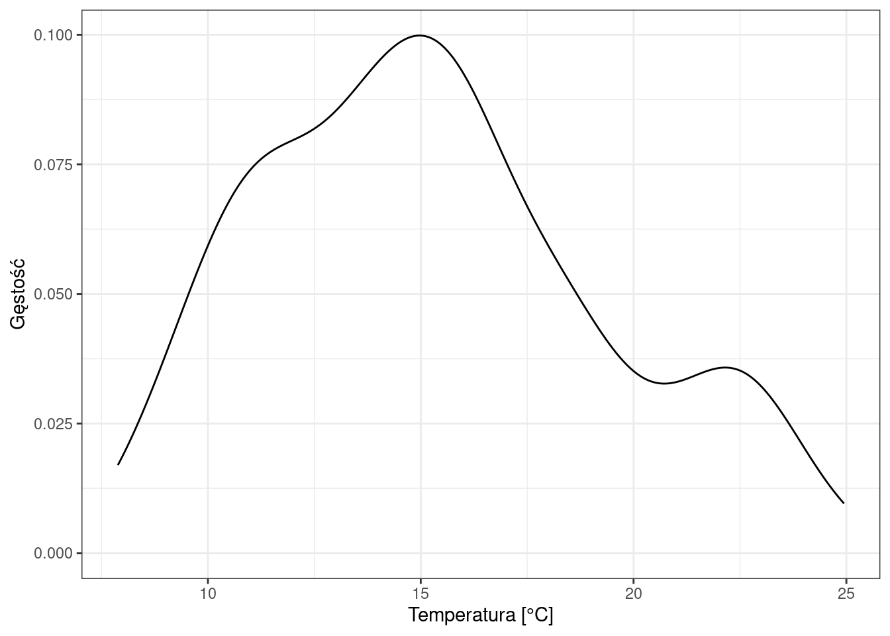
skewness(punkty$temp)[1] 0.4132931kurtosis(punkty$temp)[1] -0.5813262Krok 3: zależność od zmiennych ilościowych
ggplot(punkty, aes(temp, ndvi)) +
geom_point() +
labs(x = "Temperatura [°C]", y = "Wskaźnik ndvi") +
theme_bw()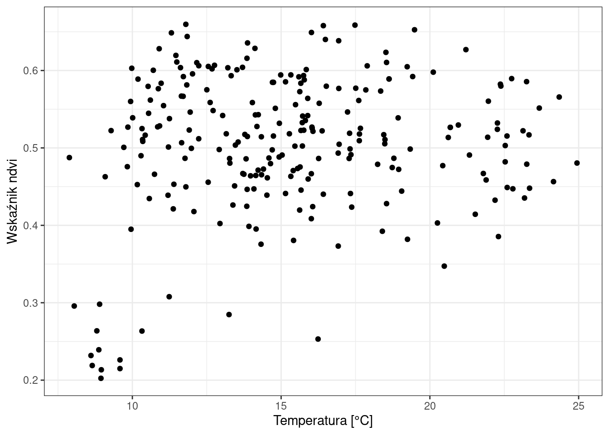
ggplot(punkty, aes(temp, srtm)) +
geom_point() +
labs(x = "Temperatura [°C]", y = "Wysokość n.p.m. [m]") +
theme_bw()Warning: Removed 2 rows containing missing values or values outside the scale range
(`geom_point()`).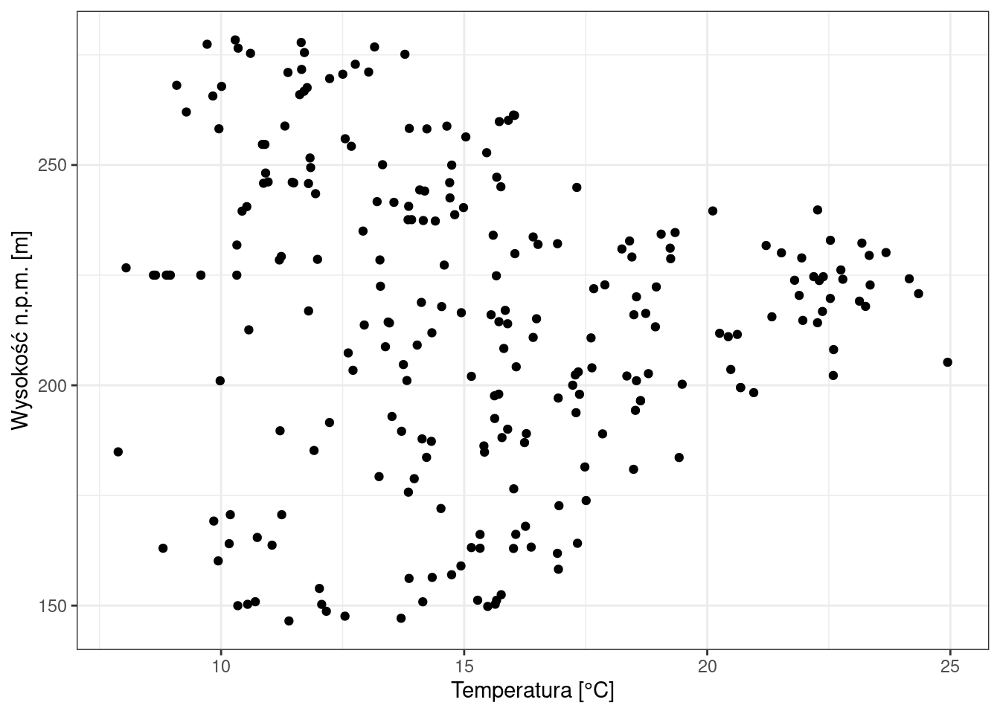
Funkcja cor.test() podaje jednocześnie wartość współczynnika korelacji oraz poziom istotności. Argument method określa rodzaj współczynnika: "spearman" — korelacja rang Spearmana, "pearson" — korelacja liniowa Pearsona.
cor.test(punkty$temp, punkty$ndvi, method = "spearman")
Spearman's rank correlation rho
data: punkty$temp and punkty$ndvi
S = 2378524, p-value = 0.4074
alternative hypothesis: true rho is not equal to 0
sample estimates:
rho
0.05294538 cor.test(punkty$temp, punkty$srtm, method = "spearman")
Spearman's rank correlation rho
data: punkty$temp and punkty$srtm
S = 2866567, p-value = 0.00782
alternative hypothesis: true rho is not equal to 0
sample estimates:
rho
-0.1695597 Krok 4: zmienność w klasach pokrycia terenu
Zmienną clc trzeba najpierw zamienić na typ czynnikowy — jej wartości to kody klas, nie liczby.
punkty = punkty |>
mutate(clc = as.factor(clc))
table(punkty$clc, useNA = "ifany")
1 2 4 <NA>
165 57 20 5 ggplot(punkty, aes(x = clc, y = temp)) +
geom_boxplot() +
labs(x = "Klasa pokrycia terenu", y = "Temperatura [°C]") +
theme_bw()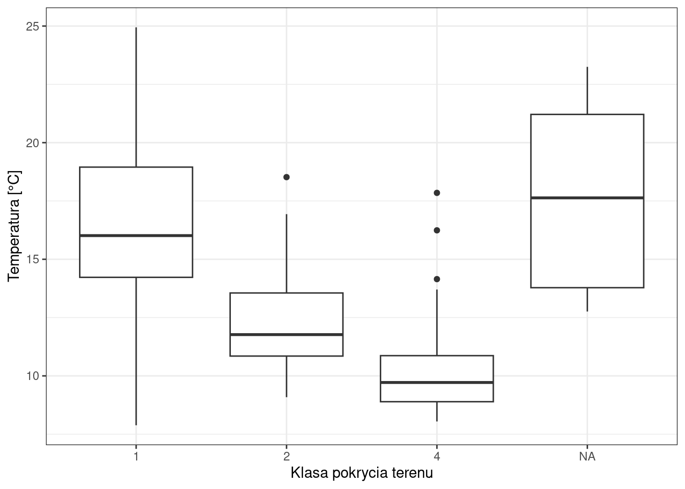
aov_test = aov(temp ~ clc, data = punkty)
summary(aov_test) Df Sum Sq Mean Sq F value Pr(>F)
clc 2 1272 636.0 60.86 <2e-16 ***
Residuals 239 2498 10.4
---
Signif. codes: 0 '***' 0.001 '**' 0.01 '*' 0.05 '.' 0.1 ' ' 1
5 observations deleted due to missingnessAnaliza wariancji nie wskazuje, między którymi grupami występują różnice. Do tego służą porównania wielokrotne (post-hoc), na przykład test Tukeya.
tukey = TukeyHSD(aov_test, "clc")
plot(tukey, las = 1)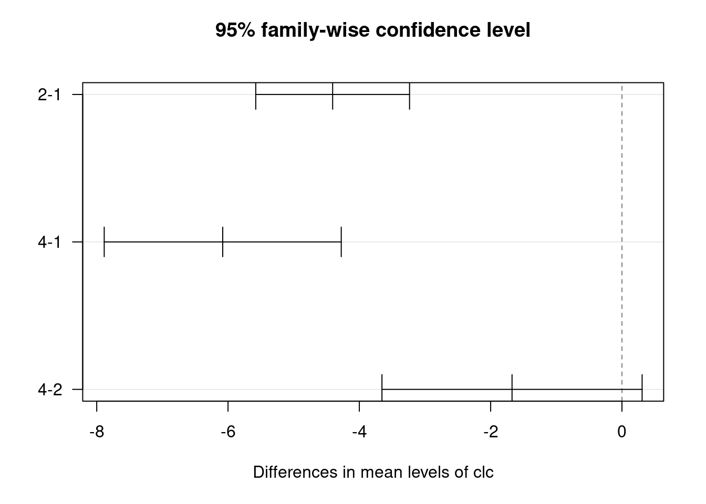
Krok 5: eksploracyjna analiza przestrzenna
Mapa lokalizacyjna pozwala sprawdzić poprawność współrzędnych oraz ocenić typ próbkowania.
tm_shape(granica) +
tm_polygons() +
tm_shape(punkty) +
tm_symbols(size = 0.4) +
tm_grid()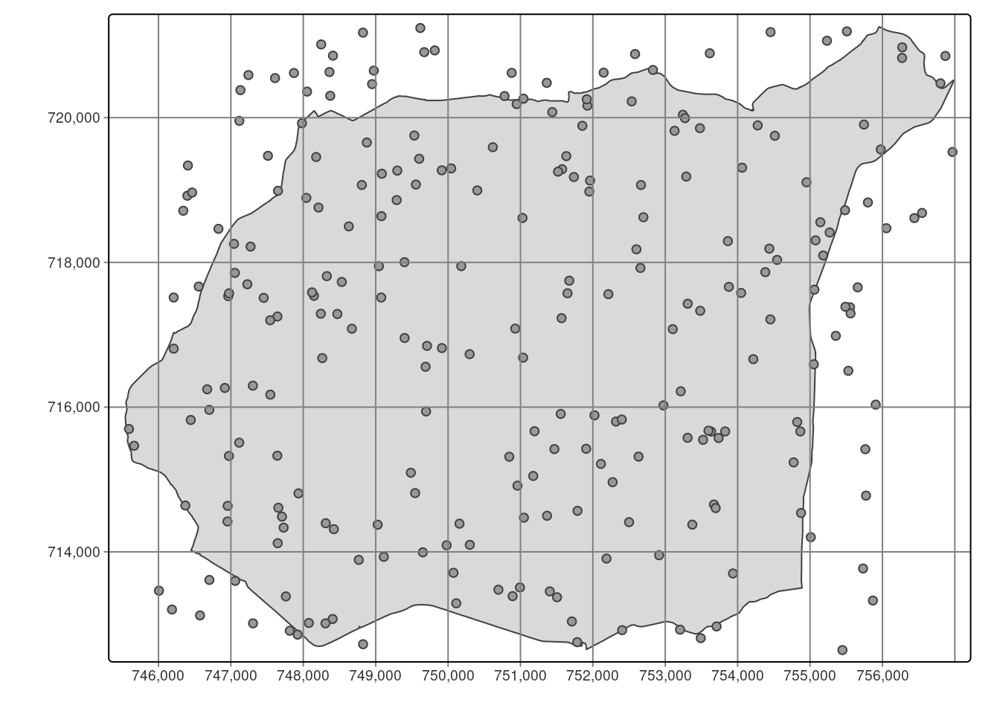
Mapa rozkładu przestrzennego samej zmiennej pozwala dodatkowo wykryć wartości odstające lokalnie.
tm_shape(punkty) +
tm_graticules(labels.show = FALSE) +
tm_symbols(fill = "temp",
fill.scale = tm_scale_continuous(values = "-brewer.spectral"),
fill.legend = tm_legend(title = "Temperatura [°C]"),
size = 0.5)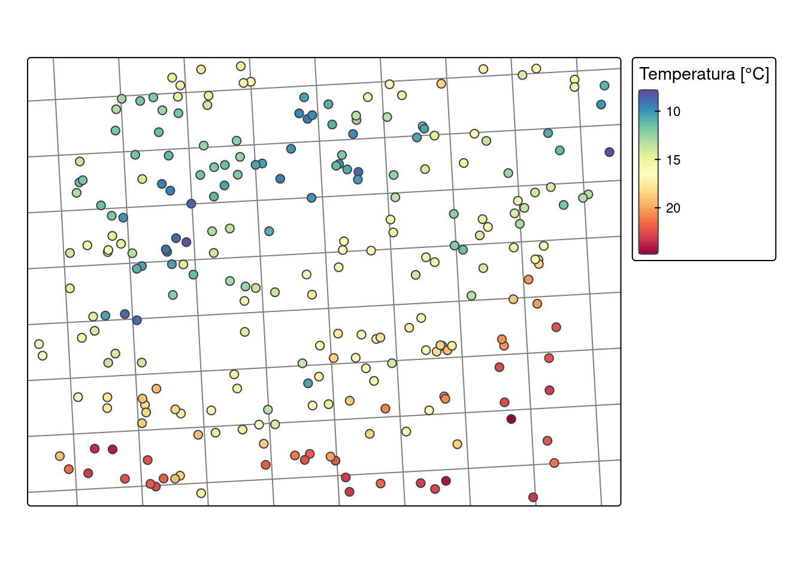
Interpretacja wyniku
Rozkład zmiennej. Temperatura powietrza w 247 punktach pomiarowych waha się od 7.9 °C do 24.9 °C, przy średniej 15.3 °C i medianie 14.9 °C. Odchylenie standardowe wynosi 4.0 °C. Średnia jest nieco wyższa od mediany, co odpowiada dodatniej skośności (0.41): rozkład ma łagodnie wydłużone prawe ramię. Kurtoza (-0.58) jest ujemna, więc rozkład jest bardziej spłaszczony od normalnego — wartości rozkładają się dość równomiernie, bez wyraźnej koncentracji wokół średniej. Histogram nie pokazuje pojedynczych wartości oderwanych od reszty zbioru, więc nie ma podstaw do wskazania wartości globalnie odstających.
Warto porównać ten rozkład z rozkładem z Przykładu 1. Tam skośność wynosiła 1.94 i średnia była znacznie wyższa od mediany; tutaj skośność jest niewielka, a średnia i mediana leżą blisko siebie. Oznacza to, że dla temperatury średnia jest sensowną miarą przeciętnego poziomu zjawiska, a dla współczynnika przestępczości nie była.
Zależność od zmiennych ilościowych. To miejsce, w którym łatwo wyciągnąć błędny wniosek. Dla pary temp–ndvi współczynnik korelacji wynosi 0.05 przy poziomie istotności 0.41 — nie ma podstaw do odrzucenia hipotezy o braku zależności. Wykres rozrzutu to potwierdza: punkty tworzą chmurę bez wyraźnego kierunku.
Dla pary temp–srtm współczynnik wynosi -0.17, a poziom istotności 0.0078 — zależność jest istotna statystycznie, ujemna (wyżej jest chłodniej, co jest zgodne z oczekiwaniem), ale bardzo słaba. Wysokość n.p.m. wyjaśnia znikomą część zmienności temperatury w tym zbiorze.
Argument use = "complete.obs" jest tu konieczny: kolumna srtm ma dwa braki danych, a funkcja cor() bez tego argumentu zwraca NA zamiast wartości współczynnika. Współczynnik policzony jest więc na 245 parach, nie na wszystkich 247.
Istotność statystyczna to nie siła zależności
Przy 247 obserwacjach istotna statystycznie okazuje się już korelacja rzędu 0,17 — wartość, której kwadrat wynosi niespełna 0,03. Dla współczynnika Spearmana, liczonego na rangach, kwadrat nie opisuje udziału wyjaśnionej zmienności wartości (tak czyta się dopiero kwadrat współczynnika Pearsona), ale pozostaje użyteczną wskazówką, jak słaba jest to zależność. Dlatego raportujemy obie liczby: wartość współczynnika i poziom istotności, a siłę zależności opisujemy na podstawie pierwszej z nich. Zasadę omawia rozdział teoretyczny części.
Zmienność w klasach pokrycia terenu. Tutaj zależność jest wyraźna. Analiza wariancji daje wartość F = 60,86 przy p < 0,001, więc średnie temperatury różnią się istotnie między klasami pokrycia terenu. Wykres pudełkowy pokazuje kierunek różnic, a test Tukeya wskazuje, które pary klas różnią się istotnie — przedział ufności niepokrywający zera oznacza różnicę istotną. Liczebności klas (165, 57 i 20 obserwacji) są na tyle duże, że wniosek jest mocny — inaczej niż dla klasy new w Przykładzie 1.
Zwróć uwagę na komunikat 5 observations deleted due to missingness pod wynikiem analizy wariancji. Zmienna clc ma pięć braków, których nie usunęliśmy przy wczytywaniu — filtrowaliśmy wyłącznie po temp. Analiza wariancji usunęła je samodzielnie, więc wykonała się na 242 obserwacjach, nie na 247. Taki komunikat zawsze trzeba przeczytać: informuje, że część danych nie weszła do obliczeń.
Eksploracja przestrzenna. Mapa lokalizacyjna potwierdza, że wszystkie punkty leżą w granicach obszaru analizy, a współrzędne są poprawnie przypisane — przy pomyłce X–Y punkty znalazłyby się daleko poza granicą. Próbkowanie jest nieregularne, z wyraźnie większym zagęszczeniem punktów w niektórych częściach obszaru. Ma to znaczenie dla planowanej analizy geostatystycznej: od rozmieszczenia punktów zależy, dla jakich odstępów można wyznaczyć semiwariogram (Rozdział 9). Mapa wartości temperatury pokazuje, że wartości niskie i wysokie nie są rozrzucone przypadkowo, lecz skupiają się w obszarach — jest to przesłanka, że zmienna ma strukturę przestrzenną, a więc estymacja geostatystyczna ma sens.
2.5 Pytania kontrolne
1. Czym różni się eksploracyjna analiza nieprzestrzenna od przestrzennej i dlaczego potrzebne są obie?
Sprawdź odpowiedź
Analiza nieprzestrzenna bada wartości atrybutów bez uwzględnienia lokalizacji: statystyki opisowe, rozkład, korelacje, zmienność w grupach. Analiza przestrzenna opiera się na lokalizacji: typ próbkowania, zmienność przestrzenna zjawiska, poprawność współrzędnych.
Obie są potrzebne, bo każda wykrywa to, czego druga nie widzi. Analiza nieprzestrzenna nie wykryje wartości odstającej lokalnie, jeśli mieści się ona w typowym zakresie zmiennej. Analiza przestrzenna nie wykryje wartości odstającej globalnie, jeśli leży ona wśród podobnych do siebie.
2. W Przykładzie 1 średnia współczynnika przestępczości jest znacznie wyższa od mediany, a w Przykładzie 2 średnia i mediana temperatury leżą blisko siebie. Co z tego wynika dla opisu obu zmiennych?
Sprawdź odpowiedź
Wyraźna różnica między średnią a medianą oznacza rozkład asymetryczny. W Przykładzie 1 skośność wynosi 1,94 — rozkład jest silnie prawoskośny, bo pojedyncze obszary mają bardzo wysoki współczynnik. W takim przypadku średnia nie opisuje typowego obszaru: jest zawyżana przez wartości skrajne. Przeciętny poziom zjawiska opisuje mediana.
W Przykładzie 2 skośność wynosi 0,41, rozkład jest niemal symetryczny, więc średnia jest sensowną miarą przeciętnej temperatury.
Asymetria rozkładu decyduje też o wyborze miary korelacji: przy rozkładach silnie asymetrycznych stosuje się współczynnik Spearmana, obliczany na rangach, a nie współczynnik Pearsona.
3. Dlaczego wynik istotny statystycznie nie oznacza, że zależność jest silna?
Sprawdź odpowiedź
Poziom istotności zależy nie tylko od siły zależności, ale też od liczby obserwacji. Przy dużej próbie istotna statystycznie okazuje się nawet bardzo słaba zależność — w Przykładzie 2 istotna była korelacja rang o wartości −0,17, czyli zależność bardzo słaba.
Dlatego zawsze raportuje się obie liczby: wartość współczynnika (siła i kierunek zależności) oraz poziom istotności (czy wynik można odróżnić od przypadku). Siłę zależności opisuje się na podstawie pierwszej z nich.
4. Czym różni się analiza wariancji od testu Tukeya i dlaczego potrzebne są oba?
Sprawdź odpowiedź
Analiza wariancji odpowiada na pytanie, czy średnie różnią się w ogóle między grupami — daje jedną odpowiedź dla całego podziału. Nie wskazuje, które grupy się różnią.
Test Tukeya to porównanie wielokrotne (post-hoc): sprawdza każdą parę grup osobno, korygując poziom istotności z uwagi na liczbę porównań. Wykonuje się go po analizie wariancji, jeśli ta wykazała istotne różnice. Na wykresie przedział ufności niepokrywający zera oznacza parę różniącą się istotnie.
5. Dlaczego wykres pudełkowy czyta się razem z wynikiem funkcji
table()?
Sprawdź odpowiedź
Ponieważ wykres pudełkowy przedstawia każdą grupę w tej samej skali graficznej, niezależnie od jej liczebności. Pudełko oparte na 16 obserwacjach wygląda tak samo przekonująco jak pudełko oparte na 458.
W Przykładzie 1 klasa new liczy 16 obszarów z 788 i ma najwyższą medianę współczynnika przestępczości. Wniosek o wyższej przestępczości w nowej zabudowie jest więc słaby: o położeniu całego pudełka decyduje kilka obszarów. Liczebność grup sprawdza się funkcją table() albo podaje bezpośrednio na wykresie.
6. Czym jest wartość odstająca lokalnie i dlaczego nie wykryje jej histogram?
Sprawdź odpowiedź
Wartość odstająca lokalnie to taka, która mieści się w typowym zakresie zmiennej — więc na histogramie nie wyróżnia się niczym — ale wyraźnie odbiega od wartości w swoim najbliższym otoczeniu. Temperatura 10 °C w zbiorze o zakresie od 8 do 25 °C jest zupełnie zwyczajna, ale jeśli wszystkie okoliczne punkty wskazują 20 °C, jest to sygnał błędu pomiaru albo zjawiska lokalnego.
Histogram pomija lokalizację, dlatego takiej wartości nie pokaże. Wykrywa ją mapa rozkładu przestrzennego zmiennej.
7. Co to błąd ekologiczny?
Sprawdź odpowiedź
Błąd ekologiczny (ang. ecological fallacy) to przenoszenie zależności zaobserwowanej na poziomie grup lub obszarów na poziom jednostek — osób, gospodarstw domowych. Z tego, że obszary o niższej medianie dochodów mają wyższy współczynnik przestępczości, nie wynika nic o osobach o niższych dochodach.
Jest to ograniczenie wpisane w analizę danych obszarowych, a nie błąd obliczeń. Pokrewnym problemem jest zależność wyników od przyjętego podziału obszaru na jednostki — problem zmiennych jednostek odniesienia (MAUP), omawiany w Rozdział 7.
8. Dlaczego warto przeczytać komunikat
observations deleted due to missingnesspod wynikiem analizy wariancji?
Sprawdź odpowiedź
Ponieważ informuje, że obliczenia wykonano na mniejszym zbiorze, niż wczytany. Funkcje statystyczne usuwają obserwacje z brakami danych samodzielnie i nie wymagają na to zgody. W Przykładzie 2 analiza wariancji objęła 242 obserwacje, nie 247, bo zmienna clc miała pięć braków — mimo że przy wczytywaniu danych filtrowaliśmy tylko po zmiennej temp.
Bez przeczytania tego komunikatu łatwo opisać wynik jako dotyczący całego zbioru.
2.6 Podsumowanie
| Pytanie | Metoda | Funkcja |
|---|---|---|
| Jakie wartości przyjmuje zmienna? | statystyki opisowe | summary(), sd() |
| Ile obserwacji liczy każda kategoria? | tabela liczebności | table() |
| Jaki jest rozkład zmiennej? | histogram, wykres gęstości, skośność, kurtoza | geom_histogram(), geom_density(), skewness(), kurtosis() |
| Czy są wartości globalnie odstające? | histogram, wykres pudełkowy | geom_histogram(), geom_boxplot() |
| Czy zmienna jest powiązana z inną zmienną ilościową? | wykres rozrzutu, test korelacji | geom_point(), cor.test() |
| Które z wielu zmiennych są powiązane? | macierz korelacji, macierz wykresów rozrzutu | cor(), chart.Correlation() |
| Czy zmienna różnicuje się w grupach? | wykres pudełkowy, analiza wariancji, test Tukeya | geom_boxplot(), aov(), TukeyHSD() |
| Czy współrzędne są poprawne? Jaki jest typ próbkowania? | mapa lokalizacyjna | tm_symbols() + tm_grid() |
| Jak zmienna rozkłada się w przestrzeni? Czy są wartości odstające lokalnie? | mapa zmiennej | tm_symbols(), tm_polygons() |
Cztery zasady, do których wracamy w kolejnych rozdziałach:
- Istotność statystyczna to nie siła zależności. Raportujemy obie liczby.
- Asymetria rozkładu decyduje o doborze miar. Przy rozkładzie silnie asymetrycznym przeciętny poziom opisuje mediana, a korelację mierzy współczynnik Spearmana.
- Wykres pudełkowy czytamy razem z liczebnością grup. Wyraźna różnica oparta na kilkunastu obserwacjach jest słabą przesłanką.
- Eksploracja wskazuje, gdzie szukać, a nie dlaczego tak jest. Korelacja nie jest przyczynowością, a zależność między obszarami nie przenosi się na osoby.
2.7 Pełny kod analizy
Poniżej zebrany jest cały kod obu przykładów, w kolejności wykonania — do skopiowania do własnego skryptu zamiast przeklejania pojedynczych fragmentów. Nie ma w nim kodu objaśniającego: to dokładnie ta ścieżka, która prowadzi od danych wejściowych do wyniku.
library(sf)
library(dplyr)
library(ggplot2)
library(tmap)
library(e1071)
cook = read_sf("data/cook_przygotowane.gpkg", layer = "cook")
nrow(cook)
cook_attr = st_drop_geometry(cook)
summary(cook_attr$CRIME_RATE)
sd(cook_attr$CRIME_RATE)
table(cook_attr$INCOME_CAT, useNA = "ifany")
table(cook_attr$HOME_VALUES_CAT, useNA = "ifany")
table(cook_attr$BUILT_YEAR_CAT, useNA = "ifany")
ggplot(cook_attr, aes(x = CRIME_RATE)) +
geom_histogram() +
labs(x = "Kradzieże na 1000 mieszkańców", y = "Liczba obszarów spisowych") +
theme_bw()
skewness(cook_attr$CRIME_RATE)
zmienne = c("WHITE", "BLACK", "ASIAN", "HISPANIC", "OTHER", "FOREIGN_BORN",
"UNEMPL", "PUBLIC_ASSIST", "VACANT", "OCCUPIED", "OWNER", "RENTER",
"MEDIAN_INCOME", "MEDIAN_BUILT_YEAR", "MEDIAN_HOME_VALUE",
"SEX_RATIO", "EDU_HIGH")
korelacje = sapply(cook_attr[zmienne], function(x) {
cor(cook_attr$CRIME_RATE, x, method = "spearman", use = "complete.obs")
})
round(sort(korelacje), 2)
wybrane = names(korelacje)[abs(korelacje) > 0.5]
round(korelacje[wybrane], 2)
PerformanceAnalytics::chart.Correlation(cook_attr[, c("CRIME_RATE", wybrane)],
histogram = TRUE, pch = 19,
method = "spearman")
cook_attr |>
filter(!is.na(INCOME_CAT)) |>
mutate(INCOME_CAT = factor(INCOME_CAT, levels = c("low", "medium", "high"))) |>
ggplot(aes(x = INCOME_CAT, y = CRIME_RATE)) +
geom_boxplot() +
labs(x = "Poziom dochodów gospodarstw domowych",
y = "Kradzieże na 1000 mieszkańców") +
theme_bw()
cook_attr |>
filter(!is.na(HOME_VALUES_CAT)) |>
mutate(HOME_VALUES_CAT = factor(HOME_VALUES_CAT, levels = c("low", "medium", "high"))) |>
ggplot(aes(x = HOME_VALUES_CAT, y = CRIME_RATE)) +
geom_boxplot() +
labs(x = "Wartość domów", y = "Kradzieże na 1000 mieszkańców") +
theme_bw()
cook_attr |>
mutate(BUILT_YEAR_CAT = factor(BUILT_YEAR_CAT, levels = c("old", "medium", "new"))) |>
ggplot(aes(x = BUILT_YEAR_CAT, y = CRIME_RATE)) +
geom_boxplot() +
labs(x = "Wiek zabudowy", y = "Kradzieże na 1000 mieszkańców") +
theme_bw()
cook_attr |>
filter(!is.na(INCOME_CAT)) |>
group_by(INCOME_CAT) |>
summarise(n = n(), mediana = round(median(CRIME_RATE), 2))
cook_attr |>
group_by(BUILT_YEAR_CAT) |>
summarise(n = n(), mediana = round(median(CRIME_RATE), 2))
tm_shape(cook) +
tm_polygons(fill = "CRIME_RATE",
fill.scale = tm_scale_intervals(style = "jenks", n = 4,
values = "brewer.yl_or_rd"),
fill.legend = tm_legend(title = "Kradzieże / 1000 mieszk."))
paleta = tm_scale_intervals(values = "brewer.yl_or_rd")
tmap_arrange(
tm_shape(cook) +
tm_polygons(fill = "BLACK", fill.scale = paleta,
fill.legend = tm_legend(title = "BLACK")),
tm_shape(cook) +
tm_polygons(fill = "WHITE", fill.scale = paleta,
fill.legend = tm_legend(title = "WHITE")),
tm_shape(cook) +
tm_polygons(fill = "VACANT", fill.scale = paleta,
fill.legend = tm_legend(title = "VACANT")),
tm_shape(cook) +
tm_polygons(fill = "PUBLIC_ASSIST", fill.scale = paleta,
fill.legend = tm_legend(title = "PUBLIC_ASSIST")),
ncol = 2)
paleta_klas = c(low = "#FFF68F", medium = "#EEB422", high = "#FF4040")
tmap_arrange(
tm_shape(cook) +
tm_polygons(fill = "INCOME_CAT",
fill.scale = tm_scale_categorical(values = paleta_klas),
fill.legend = tm_legend(title = "Dochód")),
tm_shape(cook) +
tm_polygons(fill = "HOME_VALUES_CAT",
fill.scale = tm_scale_categorical(values = paleta_klas),
fill.legend = tm_legend(title = "Wartość domów")),
ncol = 2)
granica = read_sf("data/granica.gpkg")
punkty = read.csv("data/punkty.csv") |>
filter(!is.na(temp)) |>
st_as_sf(coords = c("x", "y"), crs = "EPSG:2180")
nrow(punkty)
summary(punkty$temp)
sd(punkty$temp)
ggplot(punkty, aes(temp)) +
geom_histogram() +
labs(x = "Temperatura [°C]", y = "Liczba obserwacji") +
theme_bw()
ggplot(punkty, aes(temp)) +
geom_density() +
labs(x = "Temperatura [°C]", y = "Gęstość") +
theme_bw()
skewness(punkty$temp)
kurtosis(punkty$temp)
ggplot(punkty, aes(temp, ndvi)) +
geom_point() +
labs(x = "Temperatura [°C]", y = "Wskaźnik ndvi") +
theme_bw()
ggplot(punkty, aes(temp, srtm)) +
geom_point() +
labs(x = "Temperatura [°C]", y = "Wysokość n.p.m. [m]") +
theme_bw()
cor.test(punkty$temp, punkty$ndvi, method = "spearman")
cor.test(punkty$temp, punkty$srtm, method = "spearman")
punkty = punkty |>
mutate(clc = as.factor(clc))
table(punkty$clc, useNA = "ifany")
ggplot(punkty, aes(x = clc, y = temp)) +
geom_boxplot() +
labs(x = "Klasa pokrycia terenu", y = "Temperatura [°C]") +
theme_bw()
aov_test = aov(temp ~ clc, data = punkty)
summary(aov_test)
tukey = TukeyHSD(aov_test, "clc")
plot(tukey, las = 1)
tm_shape(granica) +
tm_polygons() +
tm_shape(punkty) +
tm_symbols(size = 0.4) +
tm_grid()
tm_shape(punkty) +
tm_graticules(labels.show = FALSE) +
tm_symbols(fill = "temp",
fill.scale = tm_scale_continuous(values = "-brewer.spectral"),
fill.legend = tm_legend(title = "Temperatura [°C]"),
size = 0.5)